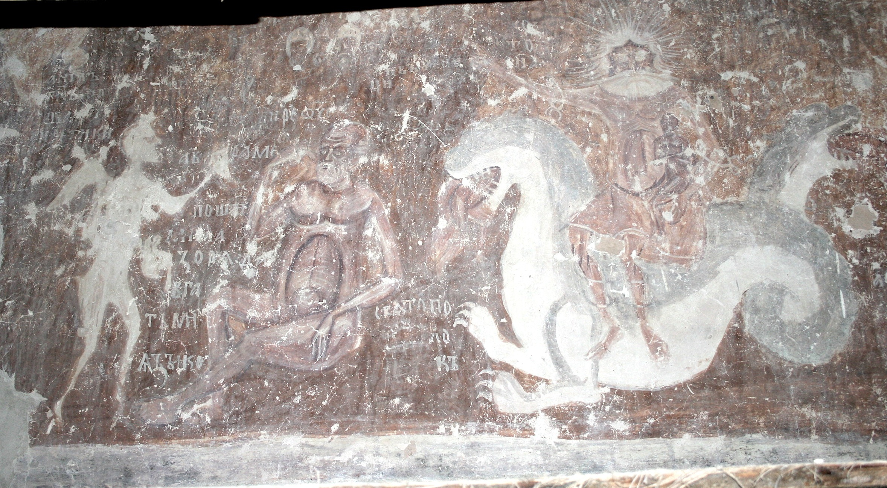
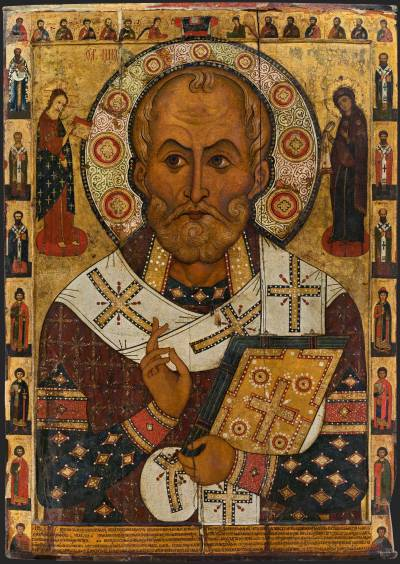
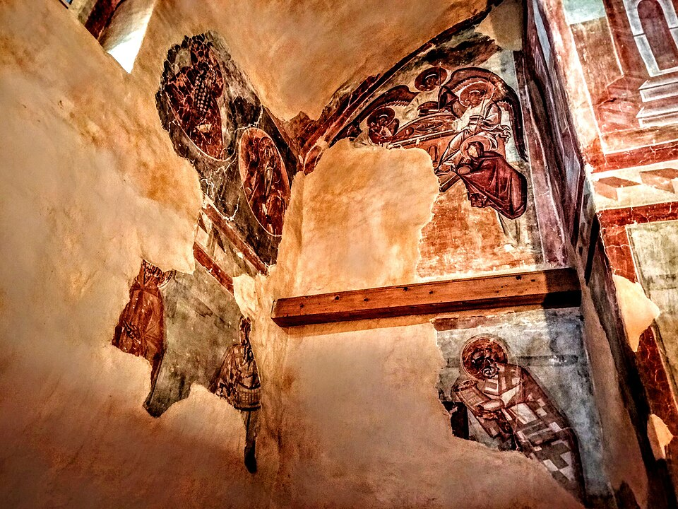
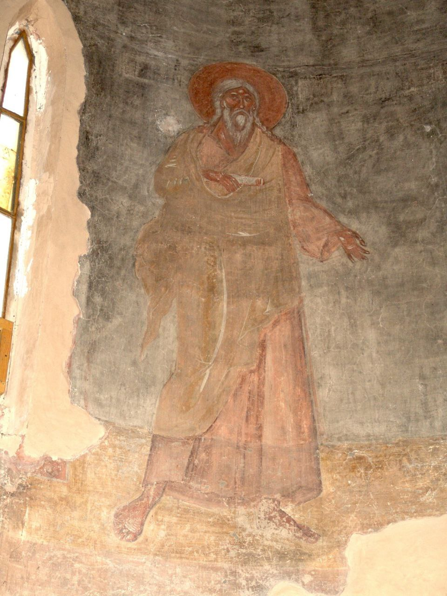
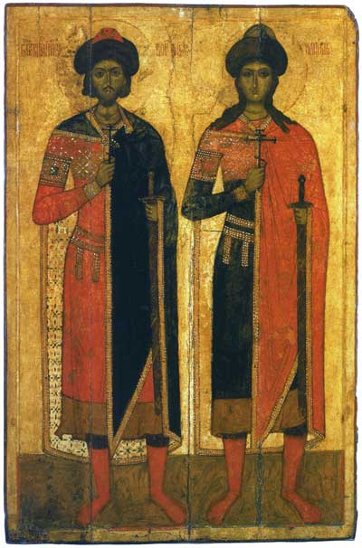

Тема: Развитие живописи в северо-западных землях Руси в XIII–XIV веках на фоне ордынского владычества.
Представьте себе Русь середины XIII века. Города сожжены, князья убиты или пленены, земля стонет под копытами ордынской конницы. Летописи полны горьких строк о том, что воевали повсюду. В этой страшной воронке смерти и отчаяния уцелели два островка — Новгород и Псков. Их не взяли приступом, но над ними тоже нависла тяжёлая тень: дань, покорность, унизительные поездки русских князей в Сарай за ярлыками.
Казалось бы, искусство в такие времена должно умереть. Но случилось обратное: именно в эти суровые десятилетия новгородская и псковская школы обретают свой неповторимый, узнаваемый голос. Это искусство людей, которые привыкли надеяться только на себя и на Бога. Оно не льстит глазу изяществом линий, оно бьёт прямо в душу своей суровой правдой. В них нет византийской нежности домонгольской эпохи. Зато есть железная вера, презрение к смерти и твёрдое знание — правда всё равно восторжествует.

Снетогорский монастырь – одна из древнейших обителей Псковщины, а его собор содержит уникальный ансамбль фресок. Росписи отличаются особой, «псковской» манерой: они менее каноничны и более свободны по сравнению со строгой византийской традицией. Исследователи отмечают удивительную динамику и даже некую «детскую» непосредственность в передаче сюжетов.
Ключевой сюжет программы – грандиозная композиция «Страшный суд». Центральное место в этой композиции занимает образ Сатаны, представленного в виде закованного в цепи старца, восседающего на двуглавом чудовище. Этот образ является зримым воплощением сил зла, хаоса и иноземного владычества, с которыми ассоциировались «тьма ига» и выплата дани.

Этот монументальный образ — один из самых характерных примеров новгородской школы живописи XIII века. Святой Николай Чудотворец представлен строго фронтально, по пояс. Он благословляет правой рукой, а в левой держит Евангелие.
Лик святого лишен византийской утонченности. Крупные черты лица, резкие тени и пронзительный, асимметричный взгляд передают непреклонную внутреннюю силу. Для жителей Новгорода этот суровый образ воспринимался как символ надежной защиты и покровительства в условиях постоянной военной угрозы с запада и востока.

Росписи церкви Спаса Преображения на Ильине улице — единственная сохранившаяся монументальная работа византийского мастера Феофана Грека в Новгороде. На фрагменте росписи в верхней части представлена сцена явления ангела женам-мироносицам.
Здесь ярко проявляется уникальный метод Феофана: фигуры написаны резкими, почти эскизными мазками. Мастер использует мощные белильные блики, которые ложатся поверх темного фона. Этот контраст света и тени создает ощущение колоссального напряжения и динамики, лишая композицию покоя и передавая драматизм евангельского события.

В барабане купола церкви Спаса на Ильине Феофан Грек поместил не традиционные фигуры пророков, а монументальные изображения ветхозаветных праотцов. Одним из самых выразительных образов является праотец Сиф — третий сын Адама, через которого, согласно библейской традиции, продолжился род человеческий после убийства Авеля.
Образ старца с длинной седой бородой поражает своей суровостью. Его взгляд обращен внутрь себя, он полностью отрешен от земного мира. Феофан пишет праотцов как сильных, аскетичных мудрецов, чья непреклонная вера была созвучна настроениям русского общества конца XIV века.

Образы святых Бориса и Глеба — князей-страстотерпцев — в древнерусском искусстве действительно имеют особый смысл. В эпоху, когда княжеские междоусобицы ослабляли Русь перед лицом внешнего врага, фигуры князей-страстотерпцев, безропотно принявших смерть от рук брата, приобретали особый смысл.
Они напоминали о цене единства и важности христианского смирения, которое не исключает готовности защищать родную землю (на подобных образах мечи, как правило, в ножнах). Включение этих святых в композицию усиливает тему общности, соборной молитвы за землю Русскую и ее народ.
Мы завершаем наш рассказ об искусстве Новгорода и Пскова, но незримая нить тянется из той эпохи дальше, в будущее. Посмотрите ещё раз на лик Николы Старого: этот святой смотрит на нас с той же суровой отеческой строгостью, с какой новгородский посадник смотрел на свою беспокойную, но свободную землю. Здесь, на северо-западе, Русь не просто выжила — она сохранила себя. Сохранила для будущей борьбы.
И когда через сто с лишним лет московские полки пойдут на Куликово поле, в их обозе могли быть и такие суровые образа. Потому что именно здесь, в этих резких линиях и горячечных бликах, вызревала та самая «стойкость», которая помогала пережить ярмо и двигаться к освобождению. Новгород и Псков не дали прерваться традиции. Они передали эстафету Москве — не изящество, а силу. И теперь эта сила зазвучит по-новому.